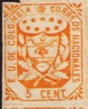
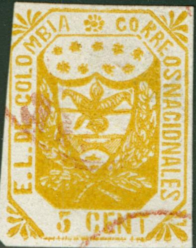
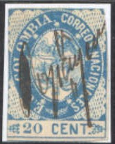
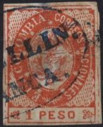
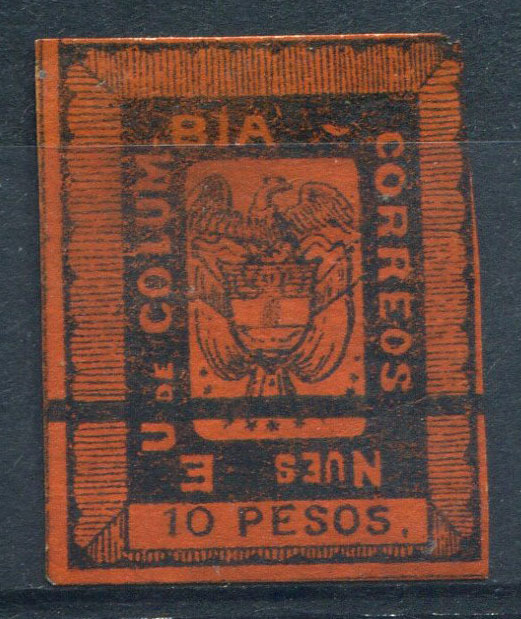

Return To Catalogue - Colombia overview
Note: on my website many of the
pictures can not be seen! They are of course present in the
catalogue;
contact me if you want to purchase it.



5 c orange 10 c blue 20 c red 50 c green 1 P lilac
The value inscription exists in two different types.
Value of the stamps |
|||
vc = very common c = common * = not so common ** = uncommon |
*** = very uncommon R = rare RR = very rare RRR = extremely rare |
||
| Value | Unused | Used | Remarks |
| 5 c | *** | *** | |
| 10 c | *** | *** | |
| 20 c | *** | *** | |
| 50 c | *** | *** | |
| 1 P | R | RR | |
At least six forgery types exist of these stamps. Examples of forgeries:
I've seen the 20 c forgery in a 'Fournier Album of Philatelic Forgeries'. Fournier also offered much better forgeries (I've also seen another forgery in a Fournier Album). I've seen the 20 c printed in sheetlets of 10 stamps (2 columns of 5 stamps).
The above forgery from a Fournier Album (with FAUX overprint).
Next to it another Fournier forgery from the same album.


Possibly the first forgery described in Album Weeds.

The lower leaves of the two branches are too small and almost
horizontal; '20' is placed too far to the right. This is the
third forgery described in Album Weeds; it appears as if there
are two horns in the upper part of the shield. The 'B' of
'COLUMBIA' is an inverted 'S' here. Only the 20 c of this
particular forgery seems to exist. The cancels on this forgery
I've seen are a curved line (as shown above) and a circle with
horizontal lines in the interior.
The next stamp has a German cancel "ZEITUNGS....", it is probably a forgery:

Another forgery:


I've only seen the 5 c and 10 c values of this particular
forgery. It exists with a bogus dot cancel.
A blackprint of a Sperati forgery (taken by the British Philatelic Association from the negatives from wich Sperati made the cliches for his imitations, with 'SPERATI REPRODUCTION' printed on the backside):


1 P Sperati forgery, note the small dots at the right hand side
of the word 'PESO', this forgery has 'SPERATI REPRODUCTION'
printed on the backside, together with '256' written manually.

Dubious item, probably a forgery of the 5 c value
 
Other dubious engraved stamp. I've only seen it cancelled with a
circular purple cancel (I can't read the text). It even exists as
a misprint in the wrong color 5 c blue.
Another forgery of the 1 P value.
1 c red
Value of the stamps |
|||
vc = very common c = common * = not so common ** = uncommon |
*** = very uncommon R = rare RR = very rare RRR = extremely rare |
||
| Value | Unused | Used | Remarks |
| 1 c | ** | ** | |






5 c yellow 10 c lilac 20 c blue 50 c green (2 types, '50' different) 1 P red
Value of the stamps |
|||
vc = very common c = common * = not so common ** = uncommon |
*** = very uncommon R = rare RR = very rare RRR = extremely rare |
||
| Value | Unused | Used | Remarks |
| 5 c | ** | *** | Colour shades from yellow to orange |
| 10 c | ** | *** | |
| 20 c | *** | *** | |
| 50 c | *** | *** | Both types |
| 1 P | *** | *** | |
Spiro made forgeries of these stamps. The top of the 'A' of 'COLOMBIA' is very broad in these forgeries (it is pointed in the originals, according to 'Focus on forgeries'). Furthermore, there should be two branches with leaves just above the value tablet. Note the typical Spiro cancels, I've also seen another typical Spiro cancel used on these forgeries (a cancel consisting of four concentric rings with horizontal lines in the center). I have seen the 5 c Spiro forgery in many shades of yellow (from very bright yellow to almost brown). I;ve seen a whole sheet of 5 c forgeries, consisting of 25 stamps (5 x 5). Be careful, at least 5 other forgeries besides the common Spiro one exist.


Forgery with a typical Spiro cancel, yet different from the above
forgeries. It also exists uncancelled.

The pattern of dots in the corners is different from the genuine
stamps.


(Another forgery type)
There should be nine stars between the oval and the inscription. The above forgeries don't have any stars at all (or they seem to have been incorporated in the pearl pattern?). The shield is totally different from the genuine stamps; it has two horizontal white sections in it. The size of the letters is too small. I've also seen the 10 c and 20 c of this particular forgery. Note the "CORREOS 7.1.60. II-III" forged cancel, that also appears on forgeries of many other countries.
Another forgery of the 20 c value.
5 c yellow 10 c lilac 20 c blue 50 c green 1 P red 5 P black on green 10 P black on red
Value of the stamps |
|||
vc = very common c = common * = not so common ** = uncommon |
*** = very uncommon R = rare RR = very rare RRR = extremely rare |
||
| Value | Unused | Used | Remarks |
| 5 c | *** | *** | |
| 10 c | * | * | |
| 20 c | *** | *** | |
| 50 c | *** | *** | |
| 1 P | *** | *** | |
| 5 P | R | R | |
| 10 P | R | R | |

A "COLON" cancel.
Forgeries, examples:

Forgery of the 5 P stamp. Exactly the same image can be found in Placido Ramon de Torres "Album
Illustrado para Sellos de Correo" of 1879 (information
passed to me thanks to Gerhard Lang, 2016).
Forgeries of the 5 P and 10 P stamps. The first stamp is in the
design of the 5 P. The 10 P has a '-' behind 'BIA' instead of a
'~'. These two forgeries were made by the same forger.

Other primitive forgery.

Probably another forgery.

Two other forgeries.
5 c yellow 10 c lilac 20 c blue 50 c green 1 P red 5 P black on green 5 P brown (1886) 10 P black on red 10 P black on lilac
Value of the stamps |
|||
vc = very common c = common * = not so common ** = uncommon |
*** = very uncommon R = rare RR = very rare RRR = extremely rare |
||
| Value | Unused | Used | Remarks |
| 5 c | *** | *** | |
| 10 c | * | * | Two types, 'B' of 'COLOMBIA' above 'V' of 'CENTAVOS' or above 'VO' of this word |
| 20 c | ** | ** | |
| 50 c | * | ** | |
| 1 P | * | ** | Also issued on bluish paper and slightly different shade of red |
| 5 P black on green | R | *** | |
| 5 P brown | R | *** | Perforated 11 |
| 10 P black on red | R | *** | |
| 10 P black on lilac | R | *** | Issued in 1877, perforated 11 |

Tete beche stamps of the 50 c value; these do not exist in
genuine stamps (see Ohrt reprint book). They were most likely
made by the forgers Curtis-Michelsen.
For the specialist; there are two types of the 5 P black on green; in the first type, the ornament on top of the 'C' of 'CINCO' penetrates into the 'C'. In the second type, it only touches it (according to Album Weeds).
Forgeries, examples:


Michelsen reprints of the 1 P and 10
P value

Probably Michelsen reprints


Forgery of the 10 c value and 10 P value
I've been told that the above stamps are forgeries, I don't have any further information.
I've heard of so-called Michelsen reprints of the 10 P value with a dot below the 'U' of 'UNIDOS' (as in the stamp above). Furthermore, the circle around the '10' is broken below the 'O' of the word 'UNIDOS' and there is a small dot in the '1' of '10', which is not connected to the bottom as in the genuine stamps. I've also seen Michelsen reprints of the 5 P values in black on green and brown (both perforated and imperforate). I don't know the distinghuishing characteristics for the 5 P values, but according to 'Handbuch der Neudrucke' of P.Ohrt, the ornament above the first 'C' of 'CINCO' is again different from the above two mentioned types (it is separated from the 'C' by a line). It seems that all values have been reprinted (probably by this Michelsen). If anybody has more information, please contact me!

Imperforate Michelsen reprints of the
5 P brown stamp

Michelsen reprint of the 10 c value

Michelsen reprint of the 10 P value
with forged cancel 'BOGOTA' in an ellipse
Fournier forgeries of the 5 P and 10 P values. The same images
can be found in the catalogue of Placido
Ramon de Torres "Album Illustrado para Sellos de
Correo" of 1879 (information passed to me thanks to Gerhard
Lang, 2016).

I've been told that the left hand side stamp is a reprint. The
stamp on the right has the wrong color (red). Also note the
different "S" in the left "CENTS" or the
spacing of the letters in the word "CORREOS". The same
image can be found in the catalogue of Placido
Ramon de Torres "Album Illustrado para Sellos de
Correo" of 1879 (information passed to me thanks to Gerhard
Lang, 2016).

Another primitive forgery of the 10 P value.
Postal forgery:

I've been told that this is a postal forgery (there should be a
scratch in the ornament above the "CO" of
"CINCO", but this is barely visible here)
For Colombia issues of 1870-1889 click here
Stamps - Timbres-Poste - Briefmarken


{kind=link}
{kind=link}
{kind=link}
{kind=link}
{kind=link}
{kind=link}
{kind=link}
{kind=link}